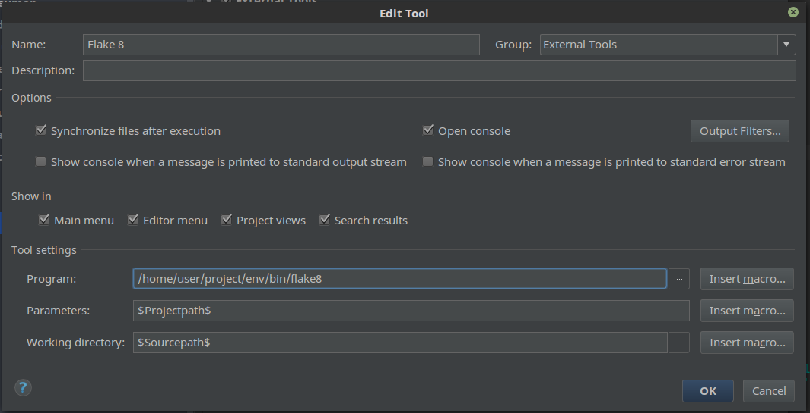
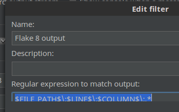
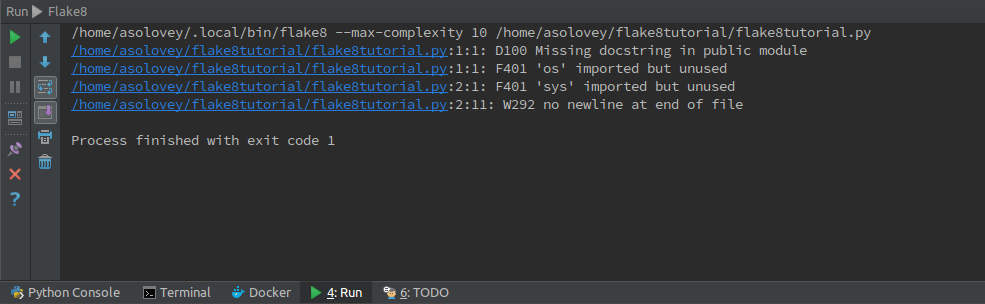

Как настроить flake8 для работы в Pycharm 2016.3
Потребовалось мне настроить flake8 в Pycharm таким образом, чтобы проверялся весь проект сразу и по итогу запуска выдавались кликабельные результаты в консоли — щёлкнул на проблемный файл и сразу перешёл на нужное место.
В интернете есть много примеров конфигурации, но ни одного работающего из коробки я не нашёл, поэтому публикую своё решение.
- Открываем проект
- Идём в меню File → Settings, либо нажимаем
Ctrl + Alt + S(в Linux). - Переходим в Tools → External tools и нажимаем на +, чтобы добавить новую запись.
- Заполняем форму как на скриншоте ниже:

Обратите внимание, что для вашего проекта, возможно, потребуется по−другому заполнить поля Parameters и Working directory. В моём случае всё заработало именно в такой конфигурации.
{:start="5"} 5. Нажимаем кнопку Output filters и далее добавляем новый фильтр, который будет парсить результаты выдачи Flake 8:

Под Linux есть такой вот баг, с обрезанием поля ввода, поэтому дублирую:
$FILE_PATH$\:$LINE$\:$COLUMN$\:.*
В итоге, после запуска Flake 8 (из меню Tools → External tools) будет такой результат:

Изображение взято отсюда.
Комментарии
Comments powered by Disqus